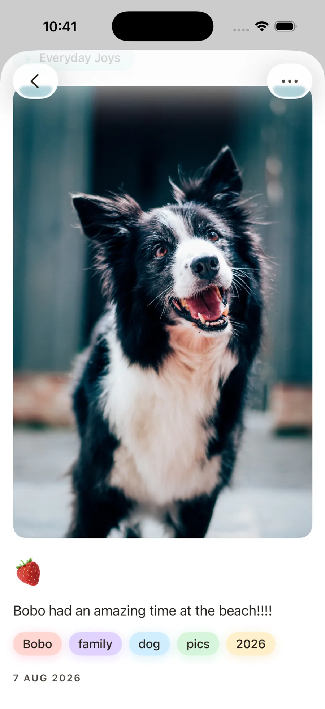
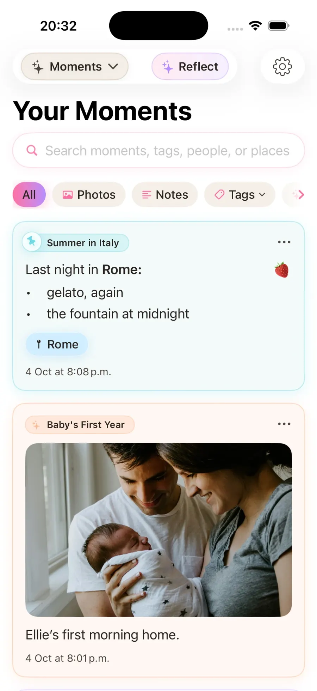
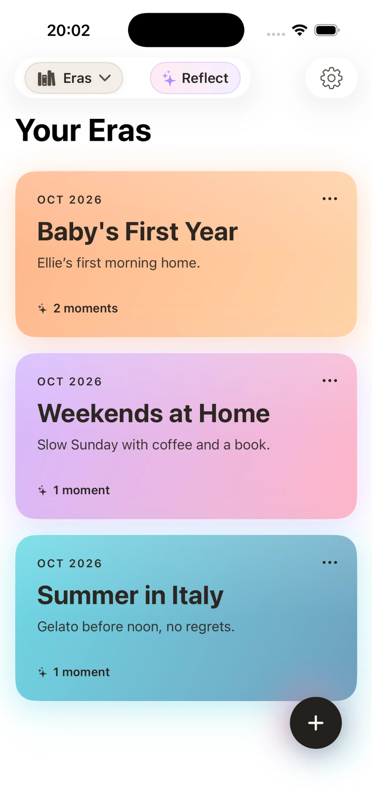
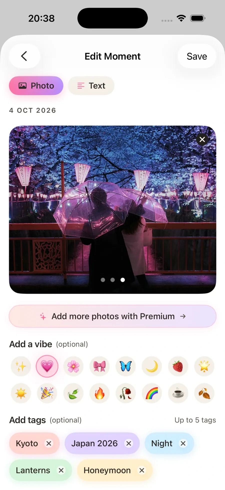
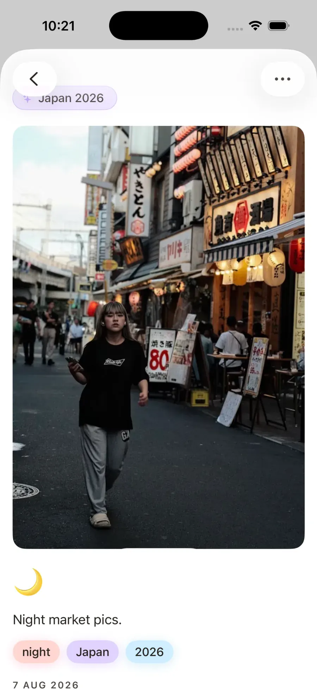

Private photo journal · iPhone
Photo Journal App for iPhone
Keep photos, words and memories together in one private photo journal.
Download Stillkeep free

On a computer?Scan with your iPhone.
Free to start · Premium available



Photos + wordsPrivate journalMemory keepingiCloud syncFree to start
Features
- Add photos, writing or both
- Organise memories into Eras
- Search moments, tags and vibes
- Look back on memories you saved
- Create and share Photocards
- Export Eras as PDFs
- Sync across Apple devices with iCloud
- Private and distraction-free
Who is Stillkeep for?
Photos + wordsTripsFamily memoriesEveryday lifePrivate journalingLooking back later
Free
- Up to 3 Eras
- Up to 20 Moments per Era
- Up to 180 photos
Premium
- Up to 500 Eras
- Up to 500 Moments per Era
- Up to 10 photos per Moment


Why Stillkeep?
Your camera roll keeps photos. Stillkeep keeps the story around them.
If you’re looking for an alternative to apps like Day One, Journey or Apple Journal, Stillkeep keeps photos, words and memories together in one private journal.
Start your photo journal.
Stillkeep is free to download on iPhone.
Download Stillkeep